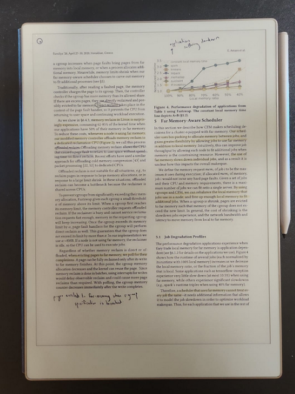

I'm a PhD student currently, which means that I spend most of my work life reading, or thinking about what I should read next. The timelines for my reading schedules range from what need to read before a class or meeting next week, to what I ought to read for a paper or research trajectory that won't have any meaningful check-in until next year.
I bought the reMarkable 1 when it first came out in 2017, and was a pre-order customer of the reMarkable 2 when it dropped in 2020. When reMarkable announced and released the new Paper Pro this September, 2024, I had ordered it within an hour. This is partially due to the undeniable fetish that I have for tech, software and hardware alike, being a tinkerer and early adopter by nature. It is also because I resonate deeply with reMarkable's vision and design ethos, which is to recreate the tactile and organizational experience of paper in an electronic tablet. As I often remark to observers when they ask about my tablet(s), the reMarkable will not replace your iPad, and therein lies its beauty. It is at its best when you are jotting down notes as if it is paper, or reading and annotating a PDF or EPUB in place of having a printed copy in front of you.
ReMarkable's exquisite execution of this design imperative, to keep the thing as 'just' or 'better paper', has consequences in a digital workflow. Switching between a PDF being read/annotated and a notebook in which notes/thoughts are being transcribed is not the smoothest experience. One has to swipe down with two fingers from the top of the device (a somewhat error-prone operation given the e-ink's diminished responsiveness when compared to a touch-screen smart phone), select the notebook to switch to, and then wait a second or so for it to open. This is arguably a software deficiency that could be improved, but the fundamental problem can be articulated in terms of the 'better paper' design ethos: a reMarkable tablet is only one piece of paper at any given time. Switching between a notebook and a book therefore naturally has some overhead.
Given my already admitted fetish for new tech, I therefore use two reMarkable tablets in my current paper- and book-reading setup. The new Paper Pro is the tablet on which I view the paper or book that is being read. The bigger screen makes a huge difference when it comes to double-column papers, and the color display means that I can employ a range of highlighters to give a better map of the document when I return to it. (Yellow is for generally important phrases, blue for definitions of terms or critical concepts, and green for terms or references that I want to look up after reading.)

My reMarkable 2 sits to the right of my Paper Pro, and serves chiefly as a notebook where I write down important points as I read. This notebook is my main 'map' of the paper or book that I return to if I want to understand what I figured as important while I was reading. I employ a similar colorized strategy for notes, where black is my default color, and blue indicates a thought in apostrophe or otherwise adjacent idea. Green is for references or things to look up later, and red is reserved for particularly important ideas or notes to self.
Thoughts about what I should read or do next often occur to me as I read, and so I use a notebook on my reMarkable 2 as an inbox for "todo" items that occur to me throughout the day. In the month or so that I've been using the Paper Pro, I've found that it's not (yet) as responsive as the reMarkable 2, presumably as the team hasn't yet optimized the device's software through bug reports and iteration. So the reMarkable 2 serves as my notebook, but also as the device where I can context-switch to jotting down a TODO.
My one other major nit with the reMarkable is the lack of a fluid way to flick to endnotes or references in a document, especially in PDFs that don't have the relative links embedded. Even where the relative link does exist, meaning that the tablet allows you to click on the endnote or reference and jump directly to the page, the return link has disappears after 3 or 4 seconds, which is almost never long enough to read the endnote or scrutinize the bibliography entry. In the event that I go over time, the link back disappears and I need to manually find my way back to the page that I was on.
When the link doesn't exist, the best way to navigate I've found is to swipe up with one finger from the bottom of the screen, and then drag the slider to the approximate point in the document where one understands the relevant endnote to be. Not only is this endnote discovery error-prone and relatively slow; the same issue of returning emerges. The document slider retains a reference to the page that one comes from, but it times out in 3 or 4 seconds just like the backlink for endnotes. Moreover, if one doesn't jump directly to the correct page for the reference (which is almost always the case, given that the slide operation is approximate unless one directly keeps track of page numbers), then one similarly loses the reference to the original page.
Having a second reMarkable gloriously solves some of these problems, as I can use my reMarkable 2 to view the endnotes and references as I read on my Paper Pro. This has the added benefit that, when referencing endnotes, one often wants to retain the last page that one viewed an endnote on, as the next one will follow in sequence.
I am fully aware that having two reMarkables is not a particularly low cost solution to my usability issues. But because of the aforementioned fetish, I had both tablets in any case, and have found that bringing the two of them with me to a cafe greatly enhances my productivity. The experience of reading with one tablet and note-taking with a second has allowed me to conclusively leave my laptop at home in most cases, as I would previously take notes in a text editor on it while reading the text on my reMarkable. Because the full reading/note-taking experience is now all in reMarkable(s), I am much less likely to get distracted and idly open up email or a browser tab, as I disconnect my phone from the Internet when deep concentration is needed.